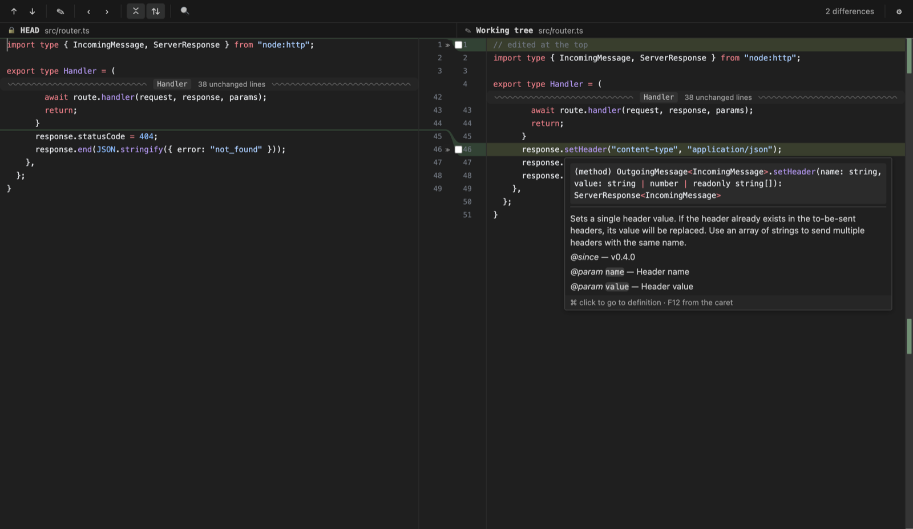
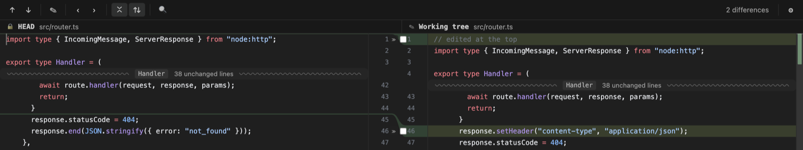

Diffs open in Porcelain's own viewer: each side headed by its revision, paired line numbers down a centre gutter, and curved connectors joining each change to its counterpart. It's the default; porcelain.diff.viewer: native restores VS Code's diff editor.
Diffs and file lists open in their own compact windows, so they don't compete with your code for editor space. One diff window is reused for every later diff, so you never accumulate diff tabs; Pin keeps a diff out of that cycle. porcelain.diff.openIn: editorTab keeps everything in the main window, and editor builds that can't open a separate window fall back to tabs and say so once.
The title carries the position and both revisions (panel-store.ts · 3 of 7 · 07748ba ↔ af89dd2), and ⌘F7 / ⌘⇧F7 step to the next and previous file. The position used to be a transient status-bar message, which the compact window never shows, hence the title.
Per window, forgotten when it closes. VS Code's diffEditor.* equivalents are global, which is why these have no native counterpart.
| Option | Values |
|---|---|
| Layout | Side by side, or unified: old lines then new lines per change in one column. Modified lines keep their modified colouring on both halves, since an edited line isn't an addition. |
| Ignore | Do not ignore · leading and trailing whitespace · whitespace · whitespace and empty lines. The last two compare normalised copies, so re-indenting stops reading as a change while the chunks still address the real lines. |
| Highlight | Line, word, character, or off. |
| Collapse unchanged fragments | Folds long unchanged runs behind a separator that names the scope and the count. A click opens the run in stages; see Unchanged runs. |
| Synchronised scrolling | On, the panes track each other and a stalled side holds its anchor mid-window through a large insertion. Off, each pane scrolls on its own, seeded from wherever it already was. |
| Context lines | How many unchanged lines stay visible around a change when unchanged fragments are collapsed. Three (3) by default. |
| Swap sides | Puts the newer revision on the left. |


The change stripe beside the scrollbar jumps to any change on click, the toolbar counts the differences live, and ⌘F finds within the diff.
Every pane has a caret, read-only revisions included. It starts on the file's first changed line, which is scrolled into view when the diff opens, moves to wherever you click, and walks with the arrow keys, Home, End and the page keys, in the split panes and the unified view alike. A vertical move steps over a collapsed run and lands on the first visible line past it, the way IntelliJ's caret passes a fold; the run stays collapsed.
The caret is also where Edit Source opens the real file: on that line and column, after writing any unsaved working-tree edits to disk first, so the line it lands on is the line the diff was showing. It used to open the file at the top, which meant scrolling to find the change again.

Rest the pointer on a symbol and the language server's hover appears, rendered from its markdown the way the editor's own hover widget renders it, fenced code coloured. Hold ⌘ (Ctrl elsewhere) and a symbol with a definition underlines; click it, or press F12 from the caret, and the definition opens in the native editor, with a pick when there are several. ⌘K ⌘I shows the hover at the caret. editor.hover.enabled and editor.hover.delay apply, since these are VS Code's own providers answering.
The working tree is asked about as the file on disk. History and index sides go through their porcelain: documents, where the built-in JSON, CSS and HTML servers answer and TypeScript's doesn't, so a .ts file's HEAD side stays quiet. A side with unsaved edits stays quiet too, until the next save: the server sees the file on disk, and positions would disagree with what you're looking at. With autosave off it says so once.

With Collapse unchanged fragments on, a long unchanged run folds behind a wavy separator carrying the hidden count and, read from the document's symbol outline, the function or class the hidden lines start in, the way IntelliJ labels a fold. A click opens the run in stages: 4 lines, then 8 more, then the rest, always from the end nearest the caret, so the separator moves away from where you're reading. Hovering the row tints the edge the lines will appear on.
A run opening above a visible caret scrolls the view along with it, so the line under the caret stays where it was on screen; a caret off screen is left alone, so a click on a separator never moves what you're looking at. The toolbar's collapse toggle re-collapses partly opened runs along with expanded ones, and a caret caught inside a run moves to the nearest line still on show.
When one side is the working tree, that side is a real editor: click anywhere and type, with selection, clipboard, IME composition and one coalescing undo/redo timeline. ⌘S saves to disk, and a dot marks unsaved edits; its tooltip names the autosave mode. If the file changes on disk underneath you, a banner offers to reload or keep yours. Index and historical sides stay read-only, and Edit Source is still the way to the real file, at the caret.
The side follows files.autoSave in all four (4) of its modes: afterDelay writes once the buffer has been quiet for files.autoSaveDelay, onFocusChange writes when the editor loses focus, onWindowChange when the window does, and off keeps ⌘S as the only way to disk. Flipping the setting takes effect in an open diff. Autosave never writes while an IME composition is in flight, and it pauses while the changed-on-disk banner is asking which copy wins; a keystroke typed while a write is in flight stays dirty and goes out with the next save. A save that fails says so in a banner rather than retrying on its own.
The working-tree side also carries the include, exclude and revert controls per hunk described under Commit.
Binary files show a placeholder with an Open in editor action. Images up to 10 MB per side render side by side; heavier ones degrade to the placeholder with both sizes. Text past 25,000 lines shows the placeholder with Show anyway. That limit was measured against the diff algorithm's budget (about 400 ms), so if it seems arbitrary, it isn't. Syntax highlighting covers six (6) grammars today and falls back to plain text for the rest.